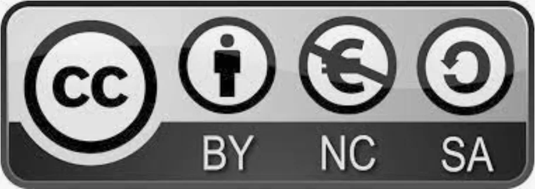

OpenEPaperLink
- The README introduces alternative firmware and a protocol for multiple electronic shelf labels, allowing e-paper tags to receive content.

- 4/5 dimensions have verifiable sources
- Only dimensions backed by verifiable sources are included; unevidenced dimensions remain null rather than receiving a neutral placeholder.
Candidate route
- Candidate use Research repurposing retired electronic shelf labels as low-power information displays
- Hardware scope Electronic shelf labels, ESP32 access points, and flasher interfaces explicitly listed in the OpenEPaperLink Wiki
- What is known The README introduces alternative firmware and a protocol for multiple electronic shelf labels, allowing e-paper tags to receive content.
- GitHub The OpenEPaperLink core project
- Evidence note Repository metadata/README points to Electronic shelf labels, ESP32 access points, and flasher interfaces explicitly listed in the OpenEPaperLink Wiki; this pass confirmed the upstream material only and did not verify installation, compatibility, or rollback on an exact device, so the entry remains an E0 discovery lead.
- Deep-audit outcome Upstream separates the system into access-point and tag firmware, lists the ESP32, tag radio, and ZBS flasher requirements, and moves current tag/flashing guidance to its Wiki. The README also warns that some historical material is obsolete, so only current Wiki/release model guidance is accepted and the route is upgraded to E1.
- Review record PS-openepaperlink · 2026-10-24
Before you start
- Do not flash, disassemble, or buy parts without installation and recovery material for the exact model, hardware revision, and firmware.
Repository snapshot
- Archived No; not archived when checked
- Last push 2026-10-23T14:34:20Z
- Default branch master
- API license identifier NOASSERTION
- The license snapshot does not automatically cover firmware, models, images, trademarks, or third-party components; a recent push does not prove compatibility.